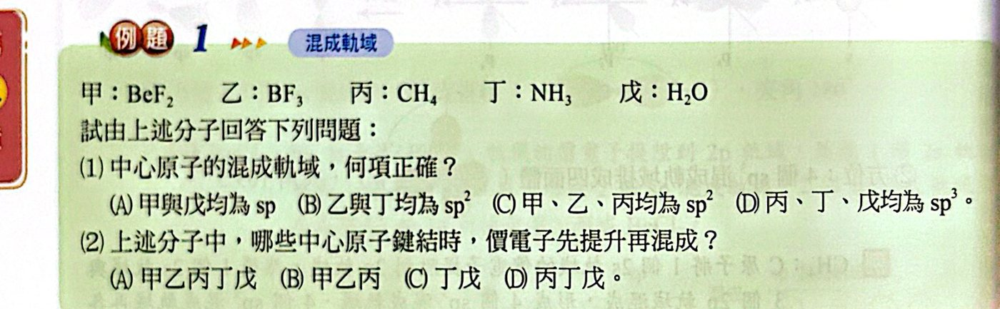
看答案與詳解收起
答(1) (D) (2) (B)
解
(1) 甲 BeF2：sp；乙 BF3：sp2；丙 CH4、丁 NH3、戊 H2O：都是 sp3 → (D)
(2) 需要先提升電子的是 Be、B、C（原本未成對電子數不夠）→ 甲乙丙 (B)
N（2p3）、O（2p4）不需提升就能直接混成。
| 混成 | 組成 | 數目 | 方位 | 夾角 | 例 |
|---|---|---|---|---|---|
| sp | 1 個 s ＋ 1 個 p | 2 | 直線 | 180° | BeCl2 |
| sp2 | 1 個 s ＋ 2 個 p | 3 | 平面三角形 | 120° | BF3 |
| sp3 | 1 個 s ＋ 3 個 p | 4 | 四面體 | 109.5° | CH4 |
BeCl2：Be 把 1 個 2s 電子提升到 2p，再將 1 個 2s 與 1 個 2p 混成 2 個 sp，各與 Cl 的 3p 重疊 → σ 鍵為 sp−p。
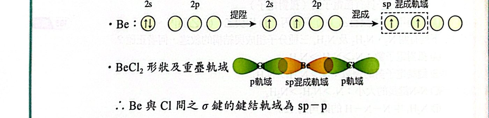
BF3：B 提升 1 個 2s 電子，1 個 2s ＋ 2 個 2p 混成 3 個 sp2，各與 F 的 2p 重疊 → σ 鍵為 sp2−p。
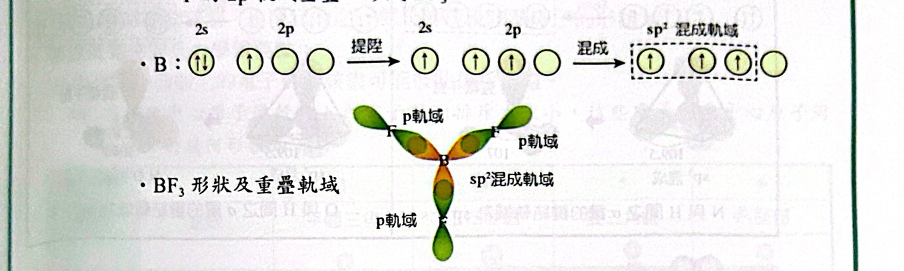
CH4：C 提升 1 個 2s 電子，1 個 2s ＋ 3 個 2p 混成 4 個 sp3，各與 H 的 1s 重疊 → σ 鍵為 sp3−s。
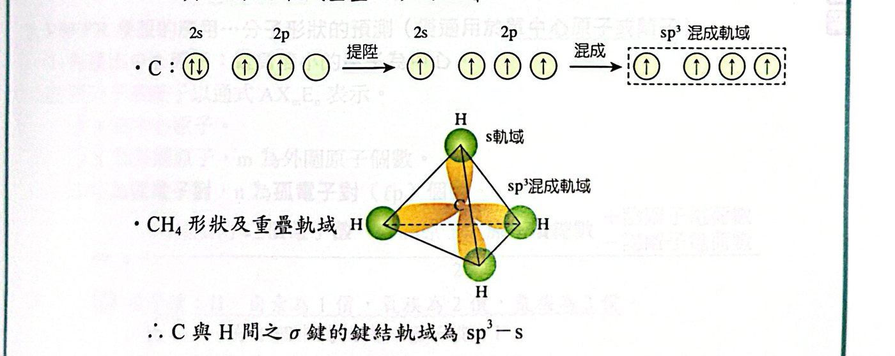
NH3、H2O 的中心原子也是 sp3：4 個 sp3 軌域中，NH3 有 1 個、H2O 有 2 個放孤電子對，所以鍵角被壓縮成 107°、104.5°。
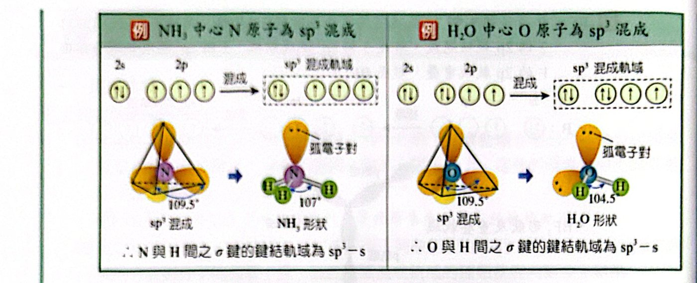
| 電子對數 | 2 | 3 | 4 | 5 | 6 |
|---|---|---|---|---|---|
| 排列形狀 | 直線 | 平面三角 | 正四面體 | 雙三角錐 | 八面體 |
| 混成軌域 | sp | sp2 | sp3 | sp3d | sp3d2 |
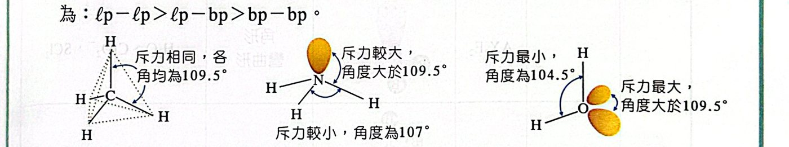
n ＝ [ 中心原子價電子數 − 外圍原子的原子價總數 ＋ 陰離子電荷數（或 − 陽離子電荷數）] ÷ 2
| m＋n | 混成 | 通式 | 形狀 | 實例 |
|---|---|---|---|---|
| 2 | sp | AX2E0 | 直線 | BeF2、HCN、CO2、N3− |
| 3 | sp2 | AX3E0 | 平面三角形 | BF3、NO3−、SO3 |
| 3 | sp2 | AX2E1 | 角形（彎曲形） | O3、SO2、NO2− |
| 4 | sp3 | AX4E0 | 四面體 | CH4、SO42−、NH4+ |
| 4 | sp3 | AX3E1 | 角錐形 | NH3、SO32−、PCl3 |
| 4 | sp3 | AX2E2 | 角形（彎曲形） | H2O、ClO2−、SCl2 |
| 5 | sp3d | AX5E0 | 雙三角錐 | PCl5、SbF5 |
| 5 | sp3d | AX4E1 | 扭曲四面體（蹺蹺板形） | SF4、SeF4 |
| 5 | sp3d | AX3E2 | T 字形 | BrF3、ClF3 |
| 5 | sp3d | AX2E3 | 直線形 | XeF2、I3− |
| 6 | sp3d2 | AX6E0 | 八面體 | SF6、SiF62− |
| 6 | sp3d2 | AX5E1 | 四角錐 | BrF5、IF5 |
| 6 | sp3d2 | AX4E2 | 平面四方形 | XeF4、ICl4− |
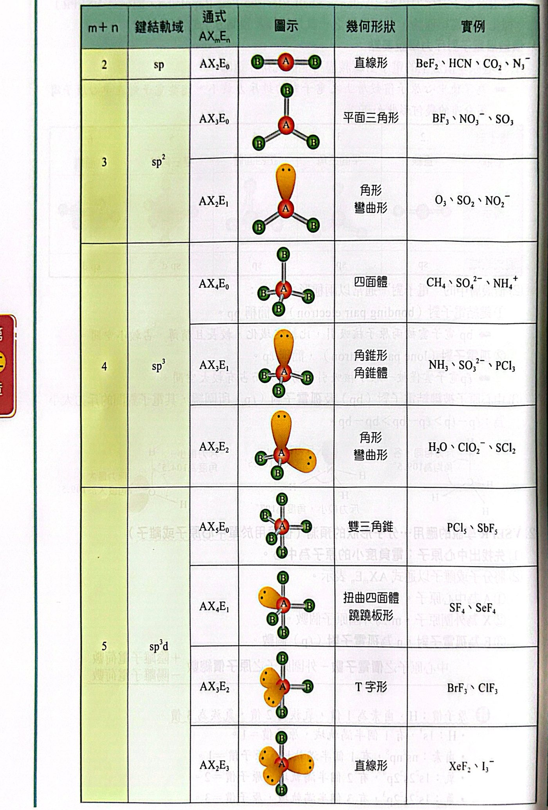
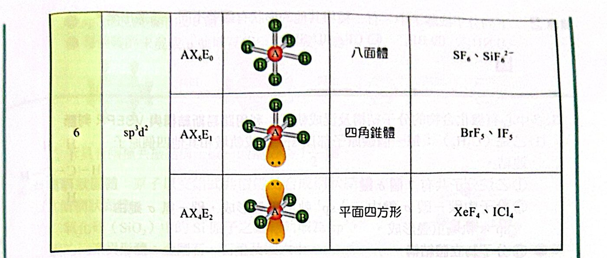
| 分子 | 碳的混成 | σ / π | 鍵結軌域 | 形狀 |
|---|---|---|---|---|
| 乙烷 C2H6 | sp3 | 7σ | C−C：sp3−sp3；C−H：sp3−s | 立體 |
| 乙烯 C2H4 | sp2 | 5σ、1π | C−C：sp2−sp2；C−H：sp2−s；π 由未混成的 p 側面重疊 | 平面 |
| 乙炔 C2H2 | sp | 3σ、2π | C−C：sp−sp；C−H：sp−s；兩組未混成 p 在兩個垂直平面形成 2 個 π | 直線 |
| 苯 C6H6 | sp2 | 12σ、3π | 每個 C 的未混成 p 互相重疊 | 平面，C−C 鍵級 1½ |
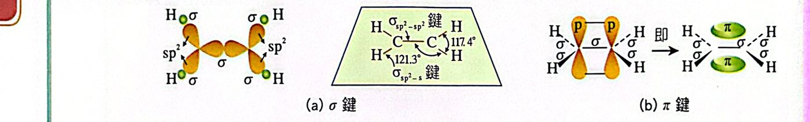
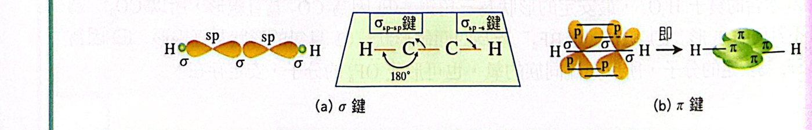
| 金剛石 | 碳六十 | 石墨 | |
|---|---|---|---|
| 混成軌域 | sp3 | sp2 | sp2 |
| C−C 鍵級 | 1 | 1⅓ | 1⅓ |

(1) 甲 BeF2：sp；乙 BF3：sp2；丙 CH4、丁 NH3、戊 H2O：都是 sp3 → (D)
(2) 需要先提升電子的是 Be、B、C（原本未成對電子數不夠）→ 甲乙丙 (B)
N（2p3）、O（2p4）不需提升就能直接混成。
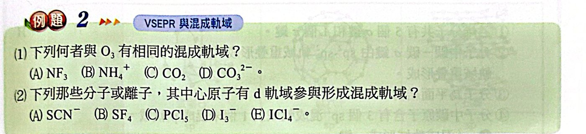
(1) O3 為 AX2E1 → sp2
- NF3：sp3；NH4+：sp3；CO2：sp；CO32−：sp2 ✓
(2) 有 d 軌域參與 ⇒ m＋n ≥ 5：
- SCN−：C 為中心，AX2E0，sp ✗
- SF4：AX4E1，sp3d ✓
- PCl5：AX5E0，sp3d ✓
- I3−：n ＝ (7 − 2 ＋ 1)/2 ＝ 3，AX2E3，sp3d ✓
- ICl4−：n ＝ (7 − 4 ＋ 1)/2 ＝ 2，AX4E2，sp3d2 ✓
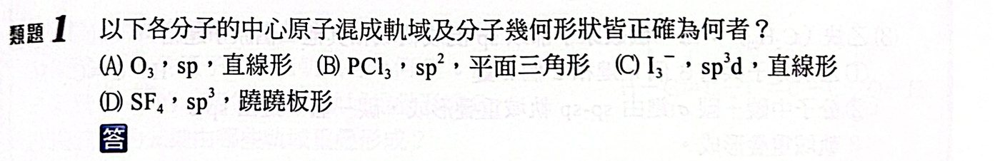
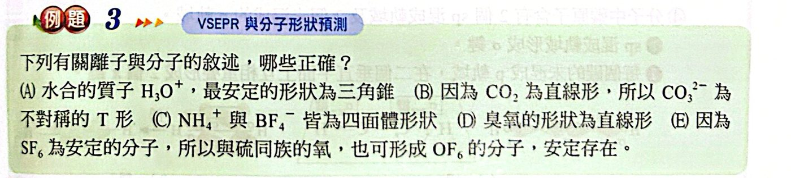
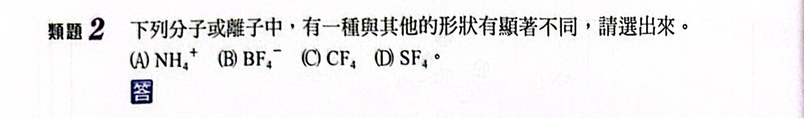
NH4+、BF4−、CF4 都是 AX4E0 四面體；
SF4：n ＝ (6 − 4)/2 ＝ 1，AX4E1 → 蹺蹺板形，明顯不同。
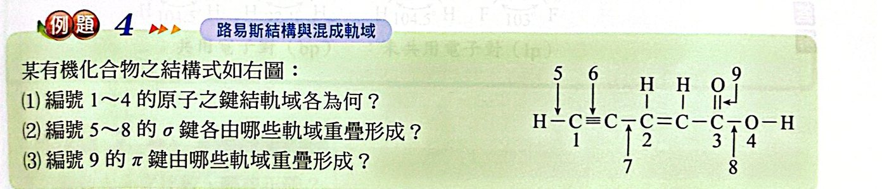
分子：H−C≡C−CH＝CH−C(＝O)−O−H
(1)
- 1 號碳在參鍵上 → sp
- 2 號碳在雙鍵上 → sp2
- 3 號碳（羧基 C＝O）→ sp2
- 4 號 O（兩個單鍵＋兩對孤對）→ sp3
(2)
- 5：H 與 sp 碳 → σ(sp−s)
- 6：C≡C 中的 σ → σ(sp−sp)
- 7：sp 碳與 sp2 碳間 → σ(sp−sp2)
- 8：羧基 C 與 O 間 → σ(sp2−sp3)
(3) C＝O 中的 π 鍵由 C 與 O 未混成的 p 軌域側面重疊 → p−p
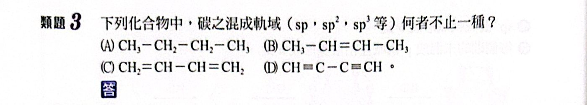
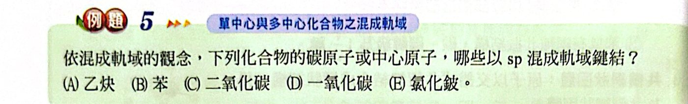
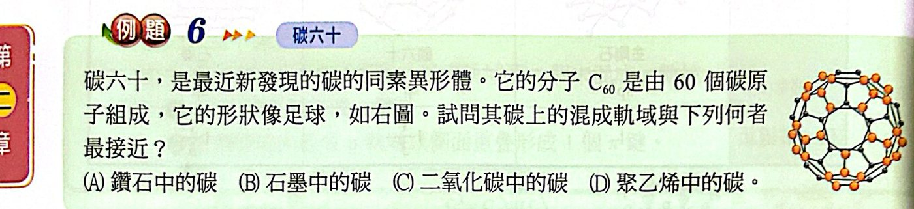
C60 每個 C 與 3 個 C 相連（一個雙鍵、兩個單鍵）→ sp2，與石墨中的碳最接近。
鑽石 sp3；CO2 中的 C 為 sp；聚乙烯中的 C 為 sp3。
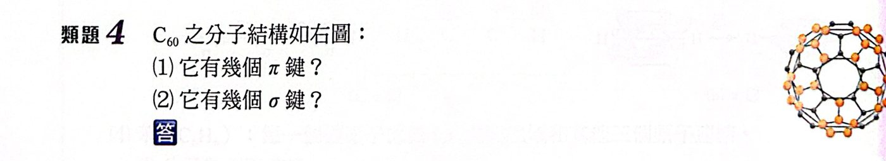
每個 C 連 3 個 C，共 60×3 ÷ 2 ＝ 90 條鍵，每條鍵都有 1 個 σ ⇒ 90 個 σ。
每個 C 只參與 1 個雙鍵，雙鍵數 ＝ 60 ÷ 2 ＝ 30 ⇒ 30 個 π。
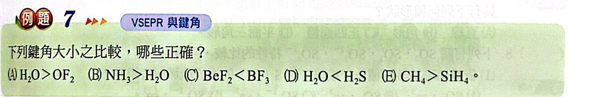
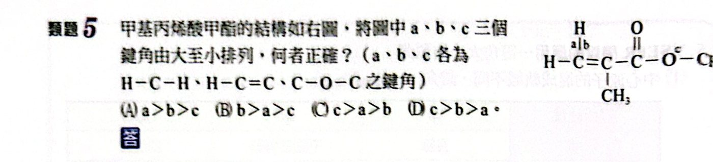
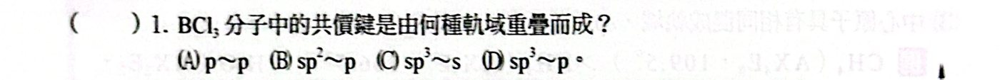
B 為 sp2 混成，與 Cl 的 3p 重疊 → sp2−p。
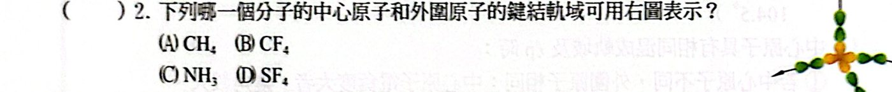
圖中中心原子以 4 個四面體方向的混成軌域，和外圍原子的啞鈴形 p 軌域重疊 → sp3−p 且沒有孤對 → CF4。
CH4 外圍是 s 軌域；NH3 有孤對；SF4 不是四面體。
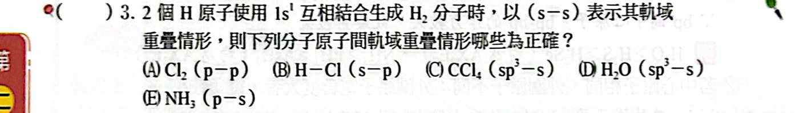
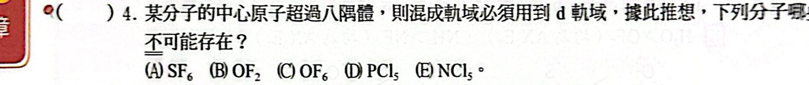
超過八隅體需要 d 軌域，第二週期元素（O、N）沒有 d 軌域 ⇒ OF6、NCl5 不可能存在。
SF6、PCl5（第三週期）可以；OF2 符合八隅體。
CO2、N2O、BeCl2、HCN 都是直線形；OF2 為 AX2E2 角形。
三角錐形 ＝ AX3E1：
- H3O+：n ＝ 1 ✓
- ClO3−：n ＝ (7 − 6 ＋ 1)/2 ＝ 1 ✓
- NF3：n ＝ 1 ✓
- BCl3、SO3：AX3E0 平面三角形
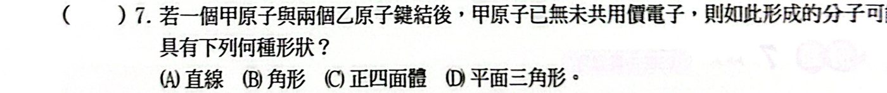
甲與兩個乙鍵結後無未共用電子 ⇒ AX2E0 ⇒ 直線形（如 BeCl2、CO2）。
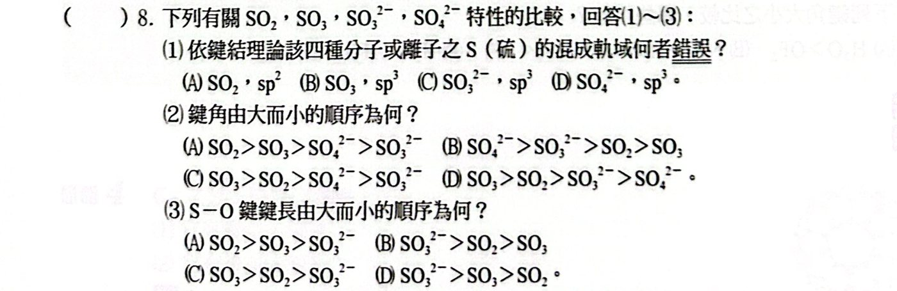
(1)
- SO2：AX2E1 → sp2
- SO3：AX3E0 → sp2（不是 sp3）✗
- SO32−：AX3E1 → sp3
- SO42−：AX4E0 → sp3
(2) 鍵角：SO3（120°）＞ SO2（約 119°，有孤對）＞ SO42−（109.5°）＞ SO32−（有孤對，約 106°）→ (A)
(3) 鍵級：SO2 1.5、SO3 4/3、SO32− 1；鍵級愈小鍵長愈長 ⇒ SO32− ＞ SO3 ＞ SO2 → (D)
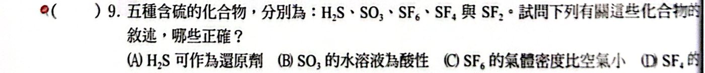
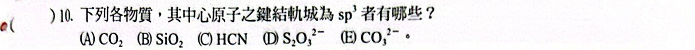
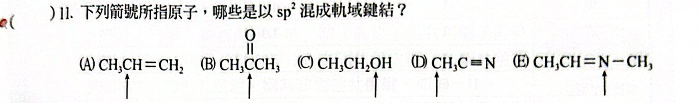
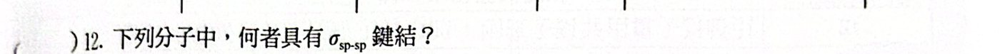
σsp−sp 要兩個 sp 混成原子相連：乙炔 H−C≡C−H 的 C−C σ 鍵 ✓
C2H6：sp3−sp3；N2F2：sp2−sp2；H2O2：sp3−sp3
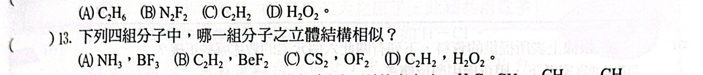
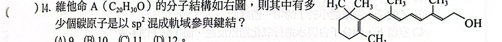
sp2 碳 ＝ 雙鍵上的碳：環上 1 個 C＝C（2 個 C）＋側鏈 4 個 C＝C（8 個 C）＝ 10 個。
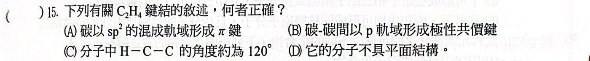
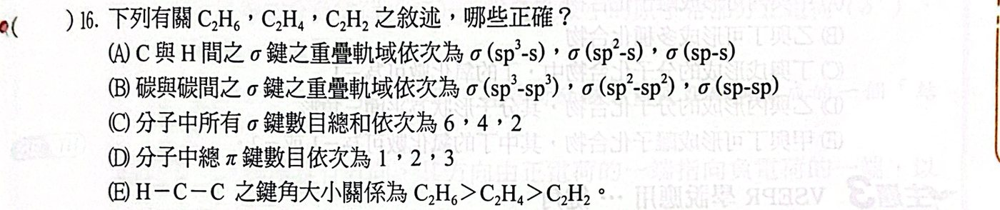
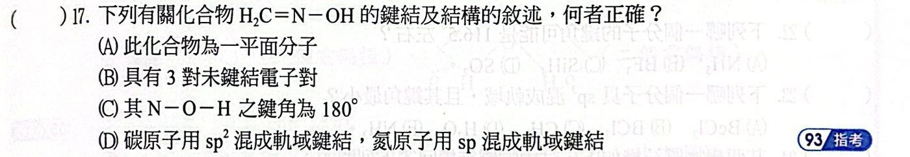
H2C＝N̈−Ö−H
- (A) ✗ O 為 sp3，O−H 的 H 不一定落在 C＝N 所在平面，不能說是平面分子
- (B) ○ N 上 1 對、O 上 2 對，共 3 對未鍵結電子
- (C) ✗ O 為 sp3 且有 2 對孤對，N−O−H 約 105°
- (D) ✗ N 在雙鍵上且有孤對，是 sp2
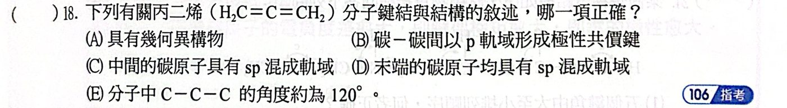
H2C＝C＝CH2（丙二烯）
- (A) ✗ 兩端 CH2 互相垂直，沒有幾何異構物
- (B) ✗ C−C 非極性
- (C) ○ 中間 C 連兩個雙鍵，為 sp
- (D) ✗ 末端 C 為 sp2
- (E) ✗ C−C−C 為 180°
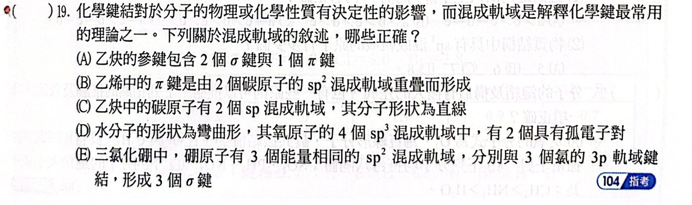
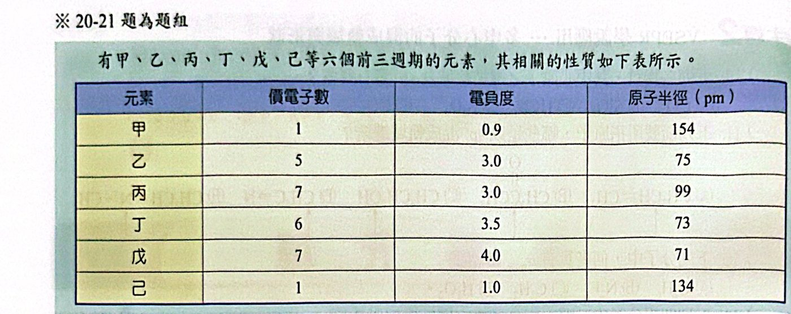
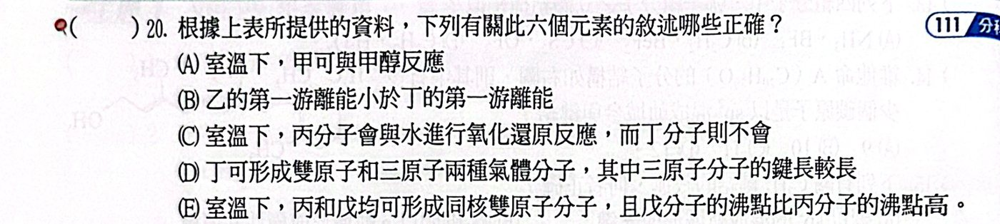
由價電子數、電負度、半徑推出：甲 Na、乙 N、丙 Cl、丁 O、戊 F、己 Li。
- (A) ○ 鈉可與甲醇反應產生 H2
- (B) ✗ N（半滿）游離能大於 O
- (C) ○ Cl2 ＋ H2O ⇌ HCl ＋ HOCl（氧化還原）；O2 不與水反應
- (D) ○ O2（鍵級 2）、O3（鍵級 1.5），O3 鍵長較長
- (E) ✗ Cl2 分子量較大，沸點比 F2 高
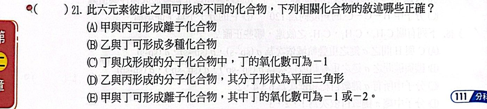
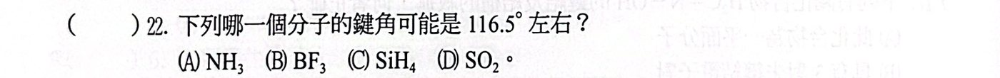
NH3 約 107°、BF3 120°、SiH4 109.5°；SO2 為 sp2 且有一對孤對，鍵角略小於 120° → 最接近 116.5°。
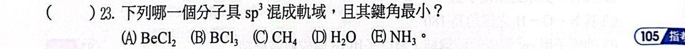
sp3 的有 CH4（109.5°）、NH3（107°）、H2O（104.5°）；孤對最多的 H2O 最小。
BeCl2（sp）、BCl3（sp2）不符。
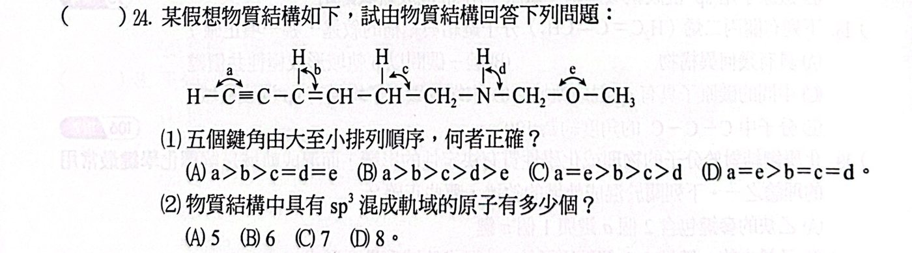
(1) a ＞ b ＞ c ＞ d ＞ e → (B)
(2) sp3 原子：CH、CH2、N、CH2、O、CH3 ＝ 6 個 → (B)
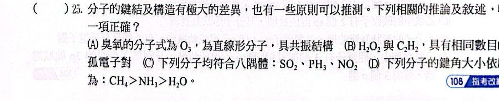